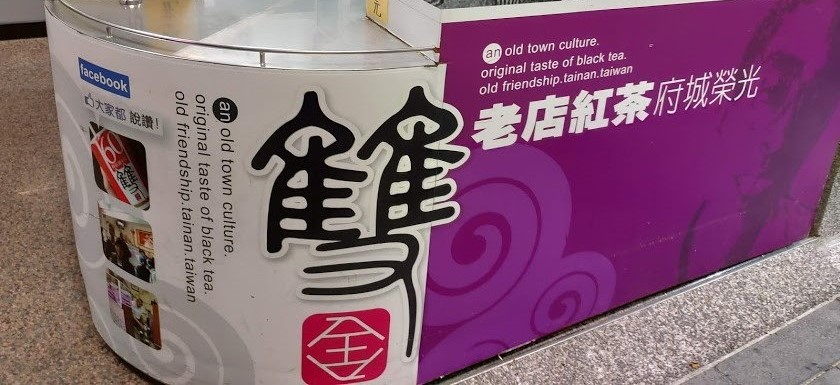
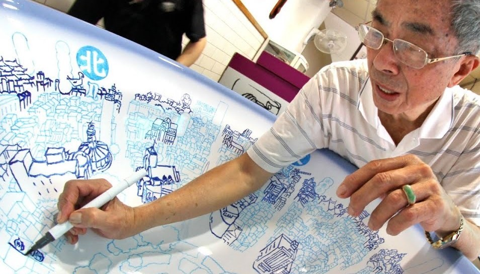

關於雙全
創辦人
張番薯先生
日據時代，張番薯先生是在日本人開設的居酒屋擔任調酒師。光復後，老闆返回日
本，居酒屋因此停業。期間，他曾前往日本，打算繼續跟著老闆工作，老闆卻建議
他留在台灣，好好發揮他一手調酒的好功夫。於是他重拾當年調酒用的器具，夫妻
倆在現今中正路131巷的巷口賣起當年獨一無二的「手搖現沖紅茶」～1949年
雙全理念
雙全秉持著「堅持該堅持的；改進該改進的」為其經營原則，努力的走到今日。雙全故事
1980年【傳承】-張番薯先生年事漸高，打算退休，便把泡茶的功夫傳授給自家親戚許天旺先生。
由於來喝茶的客人都是常客，對茶的要求十分嚴格。剛接下生意的許天旺戰戰兢兢，不敢絲毫馬虎
。除了謹守傳統風味，更以品茶者的角度，不斷改進，力求泡出更美味的紅茶。於是，「死忠」的
客人並沒有因為換老闆而離去，反而主動帶來更多第二代「死忠」茶友。
1983年【轉機】-市府推展「美化大台南運動」時，規定路邊十公尺內不得有攤販。眼看老字號「
巷口現沖紅茶」即將被迫歇業，許天旺心急如焚。所幸天無絕人之路，在131巷內覓得一間小小的
店面，許天旺先生排除萬難將它買下，「巷口現沖紅茶」正式有了明亮潔淨的門面。
1996年【蛻變】-當「泡沫紅茶」一詞在各地流行起來，許天旺先生意識到傳統風味的紅茶將有被
「泡沫化」的危機，便著手拓展紅茶老店的經營模式。他將「巷口現沖紅茶」正式註冊為「雙全紅
茶」，彰顯老店「周全、安全」的經營原則，並重新設計店面與紅茶包裝，提升品質與品管，堅持
現沖原味，使老店紅茶的在多如過江之鯽的泡沫紅茶店中，獨樹一幟，許天旺先生「紅茶伯」的外
號不脛而走，吸引不少媒體前來採訪。產品介紹
杯裝$25、瓶裝$100
選用白糖搭上仙女紅茶下去泡，喝起來略為的苦澀，又帶點麥香，入喉之後會回甘。
炎炎夏日，不彷來一杯紅茶，沁涼又解渴！認識紅茶伯
許天旺先生
今年，適逢老爸七十大壽，想好好寫寫他，卻依然辭窮。因為他的偉大，在於他用自己一生的經歷教會我：一個人即使沒有頭銜，照樣可以偉大！淺薄如我，如何宣揚他這種
沒有名相的尊貴？記憶中印象最深刻的，是一家人圍著一鍋地瓜稀飯，等不到爸爸回家的那夜。他因為在路邊擺攤，連人帶攤子，被扣在警局裡......這是他一生中最引以為恥
，從不向別人提及的往事。然而，我永遠無法忘懷，那晚，他痛苦的臉和佝僂的背。我想，不只是朱自清的父親，天底下每一個爸爸，都有一個獨特的背影，只是有些子女沒
看到罷了。我很慶幸，那一次，我看到了，而且也看懂了－－原來，所謂的幸福，是因為他奮力的堵住了現實生活的千瘡百孔！
考上南師那年，老爸開心極了！客人說：「全仔，汝歹竹出好筍囉！」當時無知，不知此話是褒是貶，只是從那一天起，收攤回家的路上，他將我幫他推攤子的手輕輕拿開，
他說：「妳將來是個老師呢.....」
報到和住校的一切手續仍是老爸一手張羅，也許是稟承了他的特質，住家和學校就在同一條街上的我，偏偏最會想家，經常是打回家的電話才接通，便已嚎啕大哭起來。但也
往往淚痕未乾，老爸早已騎著那輛載過我們五個小鬼的腳踏車來啦！為此，教官打趣著恐嚇我，要把我派到阿里山上教書去，好磨練磨練。我當然知道這是玩笑，打從一進學
校唸書，我就特別用功，為的就是想留在台南任教，誰知，轉述這個玩笑居然讓老爸信以為真。結果是，兩個人在簡陋的旅店和蚊蟲奮戰了一晚，帶著痠疼的「關節」，無功
而返。
前些日子老爸自己「爆料」，說他們為我籌備婚事的那段日子，兩老總是失眠，夜裡坐在床上一起掉眼淚....啊！從結婚、生子到購屋、教養下一代，我根本就是老爸嫁不掉的
麻煩，如果真像別人所說的，女兒是父親前世的情人，那我要在這個同是父親節與情人節的八月告訴老爸：「我的過去您已全程參與，我的未來，又怎麼能沒有您呢？」～摘
錄＜背影＞紅茶詩
緣由
每逢過年,客人最在意的莫過於──幾天不賣紅茶? 因為他們必須先知道紅茶伯會休息幾
天，然後決定要囤積多少「存糧」. 聰明的紅茶伯發現: 與其一一通知客人,倒不如「張
貼告示」來得有效。於是,每年年底， 紅茶伯的二女兒總會寫一首感性的台語詩， 由二
女婿用漂亮的書法寫在大紅紙上， 把紅茶伯:想對客人說的話，張貼出來…賞析
【民國102年(蛇)紅茶詩】
予我歡喜 予我相思到底是魔術抑是嗎啡
橫直時間若到無伊 就無元氣
彼款鹹的的甜是巷仔內的內行滋味
共雙全漛乎滇敬咱的未來佮過去
慢且乎乾勻勻仔是
行過六十四伊是紅色的傳奇
【民國95年-狗】
水愛滾茶 才會笑泡茶 勿會使滾笑
人客啊--茶的心情佇時間內發酵
撙節的學問著用數十冬的青春來換
店有老 料嘛有實賣茶 著愛老實
人客啊—好茶毋爾卜止喙凋
堅持傳統才會稠辟雙全的心意 毋是小可
【民國92年-羊】
紅茶的芳味 是美妙的歌詩 咻會落喉 講袂出喙紅茶的芳味 是遙遠的記智 愈老愈好 攏袂退時
紅茶的芳味 是歷史的堅持 感情的生理 愈做愈甜馬年冬尾 卜共汝定一個美麗的約會
初五來坐汝的笑容是羊年早春上嫷的花
【民國90年-蛇】
景氣無好逐家哀 勤儉扑拼才應該期待冬去春閣來 英雄再展好氣概
雙全店面新氣派 茶芳味純袂凊採歇睏四日報汝知 加減囤寡卡實在
初五開市好頭彩 士農工商發大財【民國87年-虎】
初一歇睏去拜拜 初二歇睏請囝婿初三歇睏樂開懷 初四歇睏接神來
初五歇睏請期待 初六開市好頭采雙全祝恁大發財 平安順利笑咍咍
一 一 一 一 一 一 一 一 一 一 一 一 一
【民國84年-豬】
一日無君天下亂 一日無茶心頭煩勸恁提早入幾罐 毋驚無食喙乾空
初一歇睏連五工 初六開市新希望茶友相招來交觀 人勇茶芳是雙全
【民國83年-狗】
紅茶伯仔貼告示 今年猶原老規矩歇睏四日去拜年 初五開市好時機
紅茶伯也有講起 定來食茶會卡水朋友相招鬥支持 健康快樂笑瞇瞇